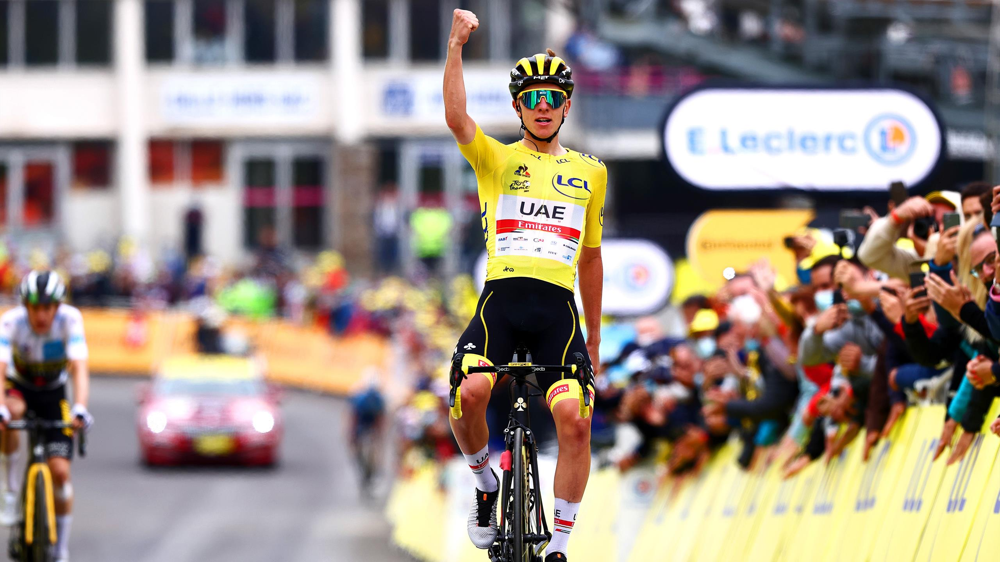

Tadej Pogacar
Hier zie je Tadej Pogacar die de 18 rit van de tour de france 2021 wint. In deze rit had hij het beste eindschot en won de sprint tegen Carapaz en Vingegaard. Die tour pakte hij niet alleen de gele trui (algemeen klassement) maar ook de bolletjestrui (beste klimmer) en de witte trui (beste renner onder de 25 jaar).
palmares
Tour de France | jongerenklassement 2022-07-24
Tour de France | stage 17 2022-07-20
Tour de France | stage 7 2022-07-08
Tour de France | stage 6 2022-07-07
Tour of Slovenia | 2022-06-19
Tour of Slovenia | puntenklassement 2022-06-19
Tour of Slovenia | stage 5 2022-06-19
Tour of Slovenia | stage 3 2022-06-17
Tirreno-Adriatico | 2022-03-13
Tirreno-Adriatico | puntenklassement 2022-03-13
Tirreno-Adriatico | stage 6 2022-03-12
Tirreno-Adriatico | stage 4 2022-03-10
Strade Bianche | 2022-03-05
UAE Tour | 2022-02-26
UAE Tour | stage 7 2022-02-26
UAE Tour | stage 4 2022-02-23
Il Lombardia | 2021-10-09
Tour de France | 2021-07-18
Tour de France | bergklassement 2021-07-18
Tour de France | jongerenklassement 2021-07-18
Tour de France | stage 18 2021-07-15
Tour de France | stage 17 2021-07-14
Tour de France | stage 5 2021-06-30
Tour of Slovenia | 2021-06-13
Tour of Slovenia | bergklassement 2021-06-13
Tour of Slovenia | stage 2 2021-06-10
Liège-Bastonge-Liège | 2021-04-25
Itzulia Basque Country | stage 3 2021-04-07
Tirreno-Adriatico | 2021-03-16
Tirreno-Adriatico | bergklassement 2021-03-16
Tirreno-Adriatico | stage 4 2021-03-13
UAE Tour | 2021-02-27
UAE Tour | stage 3 2021-02-23
Tour de France | 2020-09-20
Tour de France | bergklassement 2020-09-20
Tour de France | stage 20 2020-09-19
Tour de France | stage 15 2020-09-14
Tour de France | stage 9 2020-09-08
National Road Championships-Slovenia ITT | 2020-06-28
UAE Tour | stage 5 2020-02-27
Volta a la Comunitat Valenciana | 2020-02-06
Volta a la Comunitat Valenciana | stage 4 2020-02-08
Volta a la Comunitat Valenciana | stage 2 2020-02-06
Vuelta a Espana | stage 20 2019-09-14
Vuelta a Espana | stage 13 2019-09-07
Vuelta a Espana | stage 9 2019-09-03
National Road Championships-Slovenia ITT | 2019-06-07
Amgen Tour of California | 2019-05-18
Amgen Tour of California | stage 6 2010-05-17
Volta ao Algarve em Bicicleta | 2019-02-24
Volta ao Algarve em Bicicleta | stage 2 2019-02-21
54° Giro della Regione Friuli Venezia Giulia | 2018-09-08
Tour de l'Avenir | 2018-08-26